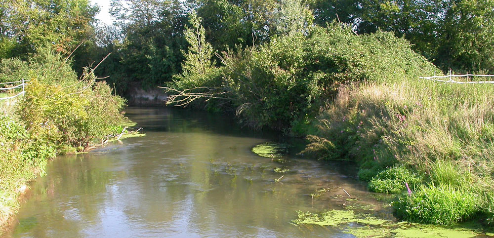

Wir freuen uns, wenn Sie sich telefonisch oder per Mail mit uns in Verbindung setzen.
Sie erreichen uns telefonisch unter 0761/8888 1750.
Die Mailadresse lautet pfeiffer[at]gobio-online.de.
gobio
Dipl.-Biol. Michael Pfeiffer
NEU:
Weißerlenstraße 2
79108 Freiburg-Hochdorf
Büro - NEU: 0761 / 88 88 1750
Privat: 07665 / 932 555
Handy: 0178 / 13 55 397
pfeiffer[at]gobio-online.de